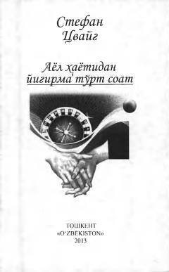

AHInson ruhiyati va murakkab taqdirlar tasvirlangan mashhur novellar to'plami.
Ushbu kitob mashhur avstriyalik yozuvchi Stefan Sveyg qalamiga mansub sara novella va hikoyalarni o'z ichiga oladi. Asarlarda inson ruhiyati, uning ichki olami, murakkab taqdirlar va nozik hissiyotlar mahorat bilan tasvirlangan. Shuningdek, insoniy qadriyatlar va turli hayotiy sinovlar yorqin ochib berilgan.